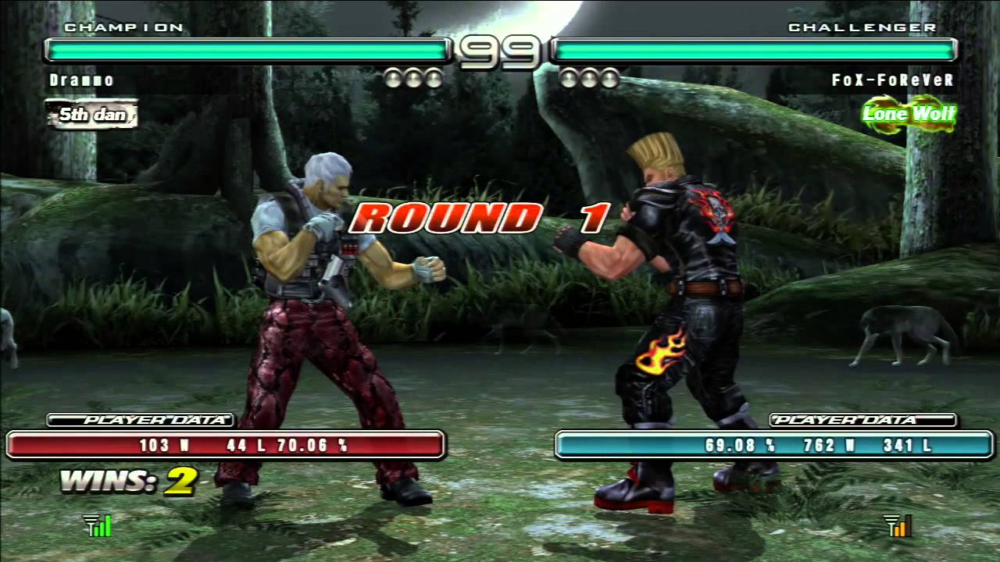

TEKKEN - un bon self-control est la clé du match
Histoire :
Tekken sort pour la premiere fois en Europe (et donc en france) vers décembre 1996. Ce qui tombait a pique car les enfants etait tres impacients de decouvrir les performance que pouvait realiser les
jeux tournant sur le moteur 3D de la playstation 1. Et de gagner en realisme par rapport a la 2D.

A l'origine l'equipe de creation etait compose d'envions 10 membres (ce qui est tres peu aujourd'hui), mais au fil du temps et vu les resultat de vente exeptionnel du premier disque Tekken sur le support
"Plus de 10millions de vente dans le monde en 1997. Le studio s'est devlopper et depuis produit en tant que compagnie en collaboration avec les editeurs "Bandai Namco"
Systeme de jeu
Comme dans la plupart des jeux de combat, le joueur choisit un personnage et affronte son adversaire en duel. Les personnages se battent avec leur propre
art martial, o√π l'on retrouve notamment les personnages iconiques de la saga : Kazuya et Heihachi Mishima qui maitrisent le karate,
Paul Phoenix le judo... La serie Tekken se compose de plusieurs modes de jeu, avec de nouveaux modes qui viennent se greffer
a la serie au fil des episodes. Les episodes comprennent les modes classiques :
le mode "Histoire", "Duel 2 joueurs", Versus (contre l'ordinateur)", "Contre-la-montre", "Survie", "Equipe 2 VS 2", "Entrainement".
Du premier Tekken jusqu'au cinquieme episode, le joueur affronte une serie d'adversaires geree par l'ordinateur ou soit contre un autre joueur.
Le mode en ligne vient s'ajouter avec Tekken 5: Dark Resurrection sur PlayStation 3, le jeu ajoute un systeme de classement avec plusieurs grades pour differencier le niveau des joueurs (force, points, ratio de victoire/defaites.)

Dans le premier Tekken, le joueur ne pouvait bloquer les attaques que manuellement. Dans Tekken 2, le système de blocage evolue, le joueur peut bloquer une attaque en restant immobile. Les personnages debout bloquent les attaques hautes et les attaques moyennes,
tandis que les personnages accroupis esquivent les attaques hautes et en bloquent les basses. Le systeme permet egalement au joueur de contrer un adversaire
accroupi en executant un coup moyen normal. Tekken 3 instaure un nouveau système d'esquive, où le joueur peut réaliser des pas de côte
soit vers le bas, soit vers le haut du decor pour éviter un coup. Les pas de cote permettent d'executer de nouvelles projections sur
les côtés gauches et droits de l'adversaire
Reportage et interview d'un joueur professionnel Francais de l'EVO "Super Akouma"
Voici les paroles (traduites en francais) echanger avec un commentateur e-sport lors de la victoire de Akouma lors de la final au Tekken world tour en 2019. :
- Com : Le risque d etre elimine apres une seule defaite vous a-t-il motive à performer, ou etait-ce plutot un obstacle?
- Akouma : Je dois dire qu aller chez les perdants etait genant, mais cela ne m a pas trop decourager pour revenir. Il faut savoir se relever.
- Com : Vous avez perdu contre Tetsu au debut du Top 24, mais vous avez sembler tres sur de vous depuis.
Vous avez meme pris votre revanche sur lui .pourquoi son Claudio vous a-t-il donner le plus de fil a retordre par rapport a vos adversaires precedents ?
- Akouma : Claudio, surtout en ligne, est un personnage qui ne vous laisse pas bouger car il est offensif. Tout le plan de jeu d Akuma est de s immobiliser tout en bloquant les coups, ensuite de s approcher le plus possible afin de faire une feinte et d'attaquer de preference par les airs.
Tetsu connait tres bien son personnage et le match au corps a corps, donc je devais etre parfaitement serieux sur ce point pour gagner.
Dans notre groupe, le match etait vraiment serrer, mais j ai reussi a renverser la tendance durant les dernieres secondes.
- Com : aviez vous des perspectives ou des idees de ce que vous aller faire par la suite?
- Akouma : En ce moment, je me concentre davantage sur la creation de contenu. Les tournois, c est bien, mais je dois penser a l avenir et gagner ma vie.
|
|
|